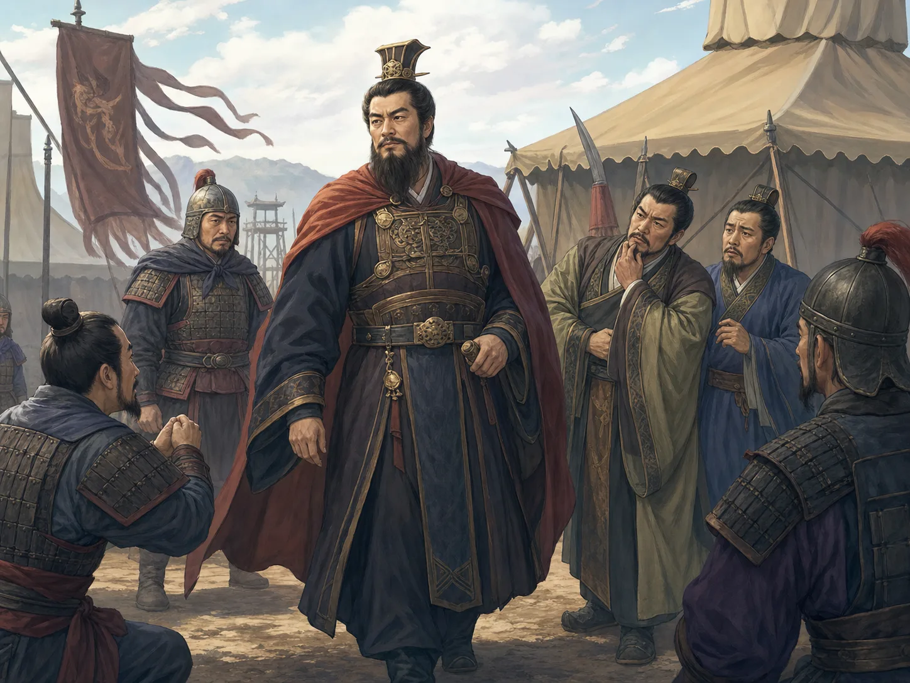
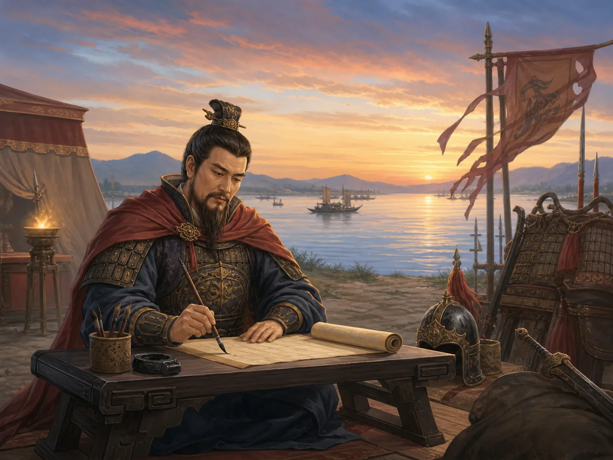

同一个曹操，为什么在史书和小说里像两个人？
Why Does Cao Cao Seem Like Two Different People in History and Fiction?
阅读难度 · 困难Reading level · Hard
Page 1
第一眼：这是曹操，还是“人们想象的曹操”？
First Look: Is This Cao Cao - or Someone's Idea of Him?

This is a modern AI-generated military-camp scene, not a portrait of Cao Cao or a record of an event. The face, clothing, armor, banners, and reactions of the surrounding figures have no historical documentation.
图中央的人昂首站在军营里，身边有人敬畏，有人猜疑。我们很容易说：“这就是曹操。”可是曹操生活的年代没有摄影，可靠的同时代肖像也没有保存下来。这张脸和这场会议都由现代图像生成。它画出的不是曹操本人，而是今天的人熟悉的“强大、难猜、令人害怕”的曹操形象。
认识他至少要分开五层证据。第一层是陈寿在曹操死后几十年编写的《三国志》；第二层是裴松之在五世纪为它补入的许多更早材料，其中有互相冲突的说法；第三层是大约一千多年后定型的小说《三国演义》；再往后还有戏曲舞台和民间故事；最后才是影视、游戏与AI插图。越晚的作品不一定“没有价值”，却不能自动当成越早的事实。
所以，我们不急着问“曹操到底是好人还是坏人”，先问：“这个细节从哪里来？”同一个人在史书和小说里像两个人，常常不是因为其中一个作者完全撒谎，而是历史书、文学和舞台各自在回答不同的问题。
The central figure stands tall in a military camp while people around him look respectful or suspicious. It is easy to say, “That is Cao Cao.” Yet photography did not exist in his lifetime, and no reliable contemporary portrait survives. Both the face and the meeting were generated for a modern image. It shows not Cao Cao himself but a familiar modern idea of him: powerful, unreadable, and frightening.
To investigate him, we need to separate at least five layers of evidence. First comes the Records of the Three Kingdoms, compiled by Chen Shou several decades after Cao Cao's death. Second are the many earlier texts added by the fifth-century commentator Pei Songzhi, some of which disagree with one another. More than a thousand years later came the novel Romance of the Three Kingdoms. Opera and popular tales added further layers, followed by film, games, and AI illustrations. A later work is not necessarily worthless, but it does not automatically become an earlier fact.
Instead of beginning with “Was Cao Cao good or bad?” we can first ask, “Where did this detail come from?” The same person may look like two people in history and fiction because history writing, literature, and theater are trying to do different things.
Page 2
他“挟天子”，那他自己是皇帝吗？
If He Controlled the Emperor, Was Cao Cao an Emperor Too?

This is a modern AI-generated animation-style scene, not Cao Cao serving as a young officer in Luoyang. Its buildings, official dress, sword, crowd, and gesture cannot reconstruct law enforcement in the Eastern Han.
曹操出生于155年，成长在The later part of the Han dynasty, about 2,000 years ago.末年。宫廷内斗、地方起兵和军阀战争让中央政府失去控制。汉献帝还是正式的皇帝，却曾被董卓、李傕等强人摆布，朝廷四处迁移，连基本供应都很困难。196年，曹操迎献帝到许县，以汉朝官职和皇帝名义处理政事，也逐步把军政大权握在自己手里。
后人常用“挟天子以令诸侯”概括这段关系。“挟”强调皇帝受到控制；支持曹操的人则会说他“奉天子”，强调他保护皇帝、重建朝廷秩序。两面都能看到一部分事实：献帝不只是一个空名字，诏令和汉朝制度仍有政治力量；但他也不能自由决定所有大事，曹操利用这种合法性号令各地，还打击过反对自己的朝臣。
曹操生前从司空、丞相一路进爵，213年成为魏公，216年成为魏王。他没有登基称帝。220年曹操去世后，儿子曹丕迫使献帝让位、建立魏国，才追尊父亲为“武皇帝”。史书后来称他“魏武帝”，很容易让孩子误以为他活着时就是皇帝；更准确的说法是：曹操生前最高是魏王，皇帝称号是死后追加的。
Cao Cao was born in 155 and grew up near the end of the The later part of the Han dynasty, about 2,000 years ago.. Court conflict, regional uprisings, and wars among military leaders weakened the central government. Emperor Xian was still the formal emperor, but powerful men including Dong Zhuo and Li Jue had controlled him. The court moved from place to place and sometimes lacked basic supplies. In 196, Cao Cao brought the emperor to Xu, conducted government through Han offices and imperial authority, and gradually concentrated military and political power in his own hands.
Later writers often summarized this relationship as “holding the emperor to command the lords.” The word “holding” stresses the emperor's lack of freedom. Cao Cao's supporters instead spoke of “honoring” or “supporting” the emperor, stressing protection and the restoration of court order. Each description catches part of the situation. Emperor Xian was not just an empty name: imperial orders and Han institutions still carried political force. Yet he could not freely decide every major matter. Cao Cao used that legitimacy to command other leaders and also moved against court officials who opposed him.
During his life, Cao Cao rose through such offices and ranks as Excellency of Works and chancellor. He became Duke of Wei in 213 and King of Wei in 216. He never took the throne as emperor. After Cao Cao died in 220, his son Cao Pi forced Emperor Xian to abdicate and founded the state of Wei. Only then was Cao Cao honored after death as “Martial Emperor.” Later histories call him Emperor Wu of Wei, which can make a young reader think he ruled as emperor while alive. More precisely, his highest title in life was King of Wei; the imperial title was posthumous.
Page 3
他既披铠甲又写诗，但真在江边提笔吗？
He Was a Commander and a Poet - but Did He Write Beside This River?

This is a modern AI-generated image of a “commander-poet,” not a historical view of Cao Cao writing Short Song or Viewing the Sea. The shore, sunset, armor, paper, handwriting, and banners are visual inventions.
曹操留下了《蒿里行》《短歌行》《观沧海》等乐府诗。他写战争造成的荒凉，也写生命短促、求取人才和面对大海的开阔感觉。他与曹丕、曹植以及王粲、陈琳等文人的创作，一起成为建安文学的重要部分。称赞他的诗不等于赞成他的每一项政治行动；文学作品能让我们听见一个时代的语言，却不是打开作者内心的机器。
“横槊赋诗”是后世特别爱画的场面：曹操在赤壁战船上横握长矛，饮酒作《短歌行》。这个画面很有戏剧性，却没有同时代记录能证明那首诗就在那个夜晚、那条船上写成。图中又把毛笔、纸卷、铠甲、河岸与夕阳拼在一起，更像一张人物海报。我们可以说曹操确实是军事统帅，也确实有诗传世；不能把插图当作两件事同时发生的照片。
210年的《求贤令》留下“唯才是举”的说法，要求官员发现出身不显、甚至名声有污点却有治理才能的人。这扩大了曹操搜罗人才的范围，但不是现代意义的人人平等招聘：选才仍服务于战争与政权，普通女性、奴婢和大多数贫民也没有因此获得同等官职机会。准确评价既要看它突破了什么，也要看它没有突破什么。
Poems attributed to Cao Cao include Ballad of Haoli, Short Song, and Viewing the Sea. He wrote about landscapes ruined by war, the shortness of life, the search for talent, and the expansive feeling of facing the sea. His work, together with writing by Cao Pi, Cao Zhi, Wang Can, Chen Lin, and others, became an important part of Jian'an literature. Admiring his poems does not require approving every political act. Literature lets us hear the language of an age, but it is not a machine that opens the author's private mind.
Later artists loved the scene called “composing poetry with a lance held crosswise”: Cao Cao stands on a warship before Red Cliffs, holds a long weapon, drinks, and creates Short Song. It is wonderfully dramatic, but no contemporary record proves that he composed the poem on that night or on that ship. This picture goes further, combining brush, scroll, armor, riverbank, and sunset like a character poster. We can say that Cao Cao was a military commander and that poems by him survive. We cannot use the illustration as a photograph showing both things happening together.
His 210 edict on recruiting talent contains the phrase “promote talent alone.” It told officials to find capable people of obscure birth and even people with damaged reputations if they could help govern. That broadened Cao Cao's search, but it was not equal-opportunity hiring in the modern sense. Recruitment served his wars and government, and ordinary women, enslaved people, and most poor farmers did not suddenly gain equal access to office. A careful judgment asks both what the policy challenged and what it left unchanged.
Page 4
官渡真是“一万人打败十万人”吗？
Did Ten Thousand Really Defeat One Hundred Thousand at Guandu?
200年的官渡之战是曹操势力扩大的关键节点。史书说袁绍选精兵十万、战马万匹，又有“十余万”的概数；《三国志·武帝纪》却说曹操在官渡“兵不满万”。连为《三国志》作注的裴松之都觉得后一个数字太少，指出曹操此前已经收编和兼并大量军队，不应只剩这些人。也可能“不满万”只计算某处、某阶段或亲自统领的部队，但我们没有完整军册可以核对。
因此，最稳妥的结论是袁绍兵力占明显优势，不能把十万对一万当作毫无疑问的精确比分。曹操一度粮少，甚至考虑退回许县。袁绍阵营中的许攸后来投向曹操，并提供屯粮地点等重要信息；曹操亲率部队夜袭乌巢，焚毁粮草，袁军指挥又未能及时有效应对，局势才迅速崩坏。
烧乌巢不是“一个天才想到妙计，于是战争立刻结束”的魔法。侦察、叛逃者的信息、守军判断、粮道、夜行和双方指挥错误一起起作用。官渡重创袁绍，却没有在一夜间统一北方；袁绍次年仍有力量，曹操又经过多年战争，才逐步击败袁氏继承者与其他势力。数字越漂亮，越要问它统计了谁、由谁记录、后来有没有人质疑。
The Battle of Guandu in 200 was a turning point in the growth of Cao Cao's power. Historical texts say that Yuan Shao selected 100,000 infantry and had 10,000 horses, while another passage gives the round figure “more than 100,000.” The Records of the Three Kingdoms says Cao Cao had “fewer than 10,000” at Guandu. Even Pei Songzhi, who annotated that history, thought the second number was too small. He noted that Cao Cao had already absorbed or defeated many large forces. “Fewer than 10,000” may count only one location, stage, or directly commanded force, but no complete army register survives for us to check.
The safest conclusion is that Yuan Shao held a clear numerical advantage, not that an exact score of 100,000 to 10,000 is beyond question. Cao Cao ran short of grain and at one point considered withdrawing to Xu. Yuan Shao's adviser Xu You then defected and supplied important information, including the location of a grain depot. Cao Cao personally led a night attack on Wuchao and burned the supplies. When Yuan Shao's command failed to respond effectively, the situation collapsed rapidly.
The Wuchao raid was not magic in which one genius had one clever idea and instantly ended a war. Intelligence, a defector's information, guards' decisions, supply routes, night movement, and command failures on both sides all mattered. Guandu badly damaged Yuan Shao, but it did not unite the north overnight. Yuan remained powerful the following year, and Cao Cao fought for several more years before overcoming Yuan's heirs and other rivals. The neater a number sounds, the more we should ask whom it counted, who recorded it, and whether later readers challenged it.
Page 5
屯田救了粮荒，也只是一件好事吗？
The Farming Colonies Eased a Food Crisis - Were They Only Good?
长期战争让中原田地荒芜、人口逃散，军队也常靠抢掠解决粮食。196年起，曹操采用枣祗、韩浩等人的建议，在许县附近推行屯田，后来扩大到更多地区。政府组织流民或士兵耕种，提供或掌握土地、耕牛和农具，再收取相当份额的粮食。它恢复了一些生产，也为军队建立较稳定的粮源，使曹操能继续作战。
可是“让荒地重新长出庄稼”并不等于无条件救济。屯田户受到田官管理，要交纳较重的收成份额，也可能被固定在制度里；军屯更直接服务军事。战争中的恢复和国家对人口、土地的控制可以同时发生。把屯田只写成爱民善举，会漏掉谁付出了劳动、谁取得了粮食和权力。
同样，曹操结束北方部分割据、重建行政与用人网络，带来一定秩序；他也发动严酷战争。攻打徐州时，早期史书明确记载军队屠城、残杀很多平民，具体死亡数字虽可能夸张，却不能因此把暴行删掉。他还处死政治对手和自己认为构成威胁的人。诗人、行政组织者和实施大规模暴力的统治者，可以是同一个人。复杂不等于功过互相抵消，更不等于拒绝判断。
Years of war left fields abandoned and people displaced across the Central Plain, while armies often survived by taking food. Beginning in 196, Cao Cao adopted proposals associated with Zao Zhi, Han Hao, and others and established farming colonies near Xu, later expanding the system. The government organized displaced civilians or soldiers to cultivate land, supplied or controlled fields, oxen, and tools, and collected a substantial share of the harvest. The system restored some production and created a steadier military food supply, helping Cao Cao continue his campaigns.
Yet “making abandoned fields grow again” was not the same as unconditional relief. Colony households were supervised by agricultural officials, owed a large portion of their harvest, and could be tightly bound to the system. Military colonies served the army even more directly. Recovery from war and stronger state control over people and land could happen at the same time. Calling the colonies only an act of kindness hides who supplied the labor and who gained the food and power.
Likewise, Cao Cao ended some regional warfare in the north and rebuilt administration and recruitment networks, producing a measure of order. He also waged brutal wars. Early histories clearly report massacres and the killing of many civilians during his campaigns in Xu Province. The reported totals may be exaggerated, but uncertainty about a number does not erase the violence. He also executed political opponents and people he considered threats. A poet, an organizer of government, and a ruler responsible for mass violence can be the same person. Complexity does not make achievements and harms cancel each other out, and it does not mean refusing to judge.
Page 6
“宁教我负天下人”是谁写进他嘴里的？
Who Put “I Would Rather Betray the World” into His Mouth?
裴松之注《三国志》时，收进三种曹操经过吕伯奢家的旧说。一种说吕家人企图抢夺，曹操反击；一种说曹操因疑心而杀人；孙盛《杂记》又加入他误听食器声和“宁我负人，毋人负我”的话。这些材料写成于事后，彼此冲突，陈寿的正文原本也没有这个故事。我们无法把任何一个版本当作现场录音。
《三国演义》把冲突改写得更完整：曹操误杀准备款待他的吕家人，又杀掉买酒回来的吕伯奢，并说“宁教我负天下人，休教天下人负我”。小说扩大了“天下人”，删去了“凄怆”的情绪，也让陈宫在场见证，于是一个极有力量的奸雄场面诞生了。它是重要文学，不是逐字史证。
华容道上关羽念旧放走曹操、曹操被马超追得“割须弃袍”、携七星刀刺杀董卓不成改称献刀，也都是《三国演义》及相关表演特别著名的情节。历史中的赤壁退军确实经过泥泞的华容道，曹操也确实与马超作战、离开董卓控制的洛阳；但那些完整桥段和对白属于小说组织。京剧里曹操常以白色脸谱出现，白色在该舞台传统中帮助塑造多疑、权谋的角色，却不是从他脸上留下的颜色，更不是历史品格鉴定书。
When Pei Songzhi annotated the Records of the Three Kingdoms, he included three older accounts of Cao Cao visiting the home of Lü Boshe. One says people in the household tried to rob Cao Cao and he fought back. Another says suspicion led him to kill. A work by Sun Sheng adds the sound of food vessels, a mistaken fear of attack, and the words “I would rather wrong others than let others wrong me.” These accounts were written after the event, contradict one another, and do not appear in Chen Shou's main text. None can be played back as an eyewitness recording.
Romance of the Three Kingdoms reshaped the material into a complete scene. Cao Cao mistakenly kills people preparing to entertain him, then kills Lü Boshe as he returns with wine and says, “I would rather betray everyone under heaven than let anyone betray me.” The novel expands “others” into “everyone under heaven,” removes the earlier account's grief, and places Chen Gong beside him as a witness. The result is a tremendously powerful portrait of a dangerous political schemer. It is important literature, not word-for-word historical evidence.
Other celebrated episodes - including Guan Yu releasing Cao Cao at Huarong Pass, Cao cutting off his beard and throwing away his robe while fleeing Ma Chao, and his failed attempt to stab Dong Zhuo before pretending the dagger was a gift - also belong especially to the novel and related performances. Cao Cao's retreat after Red Cliffs did cross a muddy Huarong route. He did fight Ma Chao and leave the capital rather than serve Dong Zhuo. But the complete scenes and speeches are literary constructions. In Peking opera, Cao Cao often wears a white painted face, which helps that stage tradition present a suspicious, calculating character. It is not paint preserved from his skin, and it is not a historical certificate of personality.
Page 7
找到一座墓，能不能看见曹操的真脸？
If We Find a Tomb, Can We See Cao Cao's Real Face?
2008至2009年，考古人员抢救发掘河南安阳西高穴的一座被盗大墓。墓葬年代、位置、规模和“魏武王常所用”石牌等多项证据互相配合，考古机构把编号M2的墓确认为曹操高陵。墓中还有一具约六十岁男性的部分遗骨，与曹操去世时六十多岁的年龄大致相合。认定依靠的是整组证据，不是只凭一块牌子或一个头骨。
墓早已被盗和扰动，遗骨也不完整。即使头骨确属曹操，所谓“复原头像”仍要由专家根据骨骼推测肌肉厚度，再选择发式、皮肤、胡须和表情；它不是从地下洗出来的一张照片。利用现代曹姓家族或其他墓葬做DNA家系推断，还会遇到样本来源、亲属链、污染和历史族谱是否可靠等问题，不能把一项有争议的结果写成最终答案。
考古可以告诉我们墓怎样建、放过什么、经历了哪些盗扰，也能检验文献中的葬制信息。它不能直接告诉我们曹操看见敌军时心里想什么，更不能裁定他是“英雄”还是“奸雄”。读到最后，我们得到的不是一张完美真脸，而是一套更好的方法：把史书正文、后加注释、小说、舞台和现代科学各放回自己的证据层。
In 2008 - 2009, archaeologists carried out a rescue excavation of a looted tomb at Xigaoxue near Anyang, Henan. Its date, location, scale, and inscribed stone tags - including ones referring to objects “regularly used by King Wu of Wei” - formed a group of connected clues. Archaeological institutions identified Tomb M2 as Cao Cao's Gaoling mausoleum. The tomb also contained partial remains of a man estimated to be around sixty, broadly consistent with Cao Cao's age in his mid-sixties at death. The identification rests on evidence working together, not on one tag or one skull alone.
The tomb had long been robbed and disturbed, and the bones were incomplete. Even if the skull belonged to Cao Cao, a facial “reconstruction” still requires specialists to estimate soft-tissue depth and choose hair, skin, beard, and expression. It is not a photograph washed clean after two thousand years underground. DNA projects using present-day Cao families or remains from other tombs face questions about sample origins, family links, contamination, and the accuracy of historical genealogies. A disputed result should not be presented as a final answer.
Archaeology can show how a tomb was built, what it once contained, how it was disturbed, and whether burial information in texts matches material evidence. It cannot tell us exactly what Cao Cao thought when he saw an enemy, and it cannot rule that he was either “hero” or “villain.” At the end, we do not receive one perfect true face. We gain a better method: return the main historical text, later annotations, novel, stage, and modern science to their proper layers of evidence.
小结：先给证据贴标签，再给人物下判断
In Summary: Label the Evidence Before Judging the Person
曹操是汉献帝名下最有权势的臣子和魏王，不是生前称帝的“魏武帝”；他在官渡以弱胜强，但参战数字并非精确比分；他推行屯田、延揽人才、写下重要诗歌，也发动战争、屠城并压制异己。这些内容都有历史证据，却仍要辨认记录者、时间和争议。
小说让他在华容道逃生、割须弃袍，并说出更响亮的“天下人”；戏曲再给他一张醒目的白脸。文学和舞台让人物容易记住，历史阅读则要求我们不把它们倒灌回两千年前。同一个曹操看起来像两个人，是因为他的行动本来就矛盾，也因为许多时代不断重写他。先标证据，再作判断，我们看见的才不只是一张脸谱。
Cao Cao was the most powerful subject acting under Emperor Xian and later King of Wei - not an emperor called Emperor Wu during his lifetime. He overcame a larger force at Guandu, but the troop totals are not an exact scoreboard. He established farming colonies, recruited talent, and wrote major poems. He also waged wars, massacred communities, and crushed opponents. These claims have historical evidence, but we must still examine who recorded them, when, and with what uncertainty.
Fiction sends him through Huarong Pass, makes him cut off his beard and discard his robe, and gives him the louder phrase “everyone under heaven.” Opera adds an unforgettable white face. Literature and theater make a person memorable; historical reading asks us not to pour those inventions backward into the second century. Cao Cao can look like two people because his actions really were contradictory and because many later ages rewrote him. Label the evidence first, then judge. That is how we see more than a painted face.